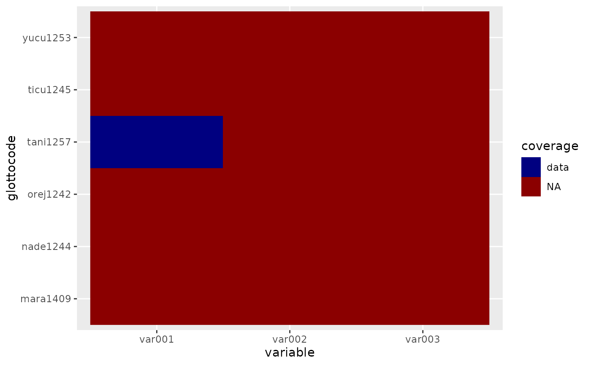

This function offers different types of visualizations for linguistic data and linguistic distances.
glottoplot(
glottodata = NULL,
glottodist = NULL,
type = NULL,
glottonmds = NULL,
color = NULL,
ptsize = NULL,
label = NULL,
filename = NULL,
palette = NULL,
k = NULL,
na.rm = FALSE,
row2id = NULL,
preventoverlap = FALSE,
alpha = NULL,
colorvec = NULL,
expand = NULL,
lbsize = NULL,
ptshift = NULL,
lbshift = NULL
)glottodata table
A dist object created with glottodist
The type of plot: "heatmap", "nmds", or "missing". Default is heatmap if nothing is provided.
A glottonmds object created with glottonmds
Name of variable to be used to color features (optional). See 'Details' below.
Size of points between 0 and 1 (optional)
Name of variable to be used to label features (optional). See 'Details' below.
Optional filename if output should be saved.
Name of color palette, use glottocolpal("all") to see the options
Number of dimensions. Either 2 or 3 for nmds.
Whether na's should be removed (default is FALSE)
In case of nmds, specify what each row contains (either 'glottocode' or 'glottosubcode')
For nmds with 2 dimensions, should overlap between data points be prevented?
For nmds with 2 dimensions: Transparency of points between 0 (very transparent) and 1 (not transparent)
Vector specifying colors for individual values and legend order (non-matching values are omitted), for example: c("Arawakan" = "rosybrown1", "Yucuna" = "red", "Tucanoan" = "lightskyblue1", "Tanimuca-Retuarã" = "blue", "Naduhup" = "gray70", "Kakua-Nukak" = "gray30")
Optionally expand one or all of the axes. Default is c(0,0,0,0), referring to respectively xmin, xmax, ymin, ymax. If you want to change the maximum of the x-axis, you would do: c(0,1,0,0).
Label size (optional)
(optional) If preventoverlap is TRUE, how much should points be shifted?
(optional) If preventoverlap is TRUE, how much should labels be shifted? See the 'values' argument in ggplot2::scale_color_manual() for details.
a visualization of a glotto(sub)data, glottodist or glottonmds object, which can be saved with glottosave()
If no glottodata object is provided, then you have the following options for the 'color' and 'label' arguments: ', 'glottocode', 'name', 'macroarea', 'isocode', 'countries', 'family_id', 'classification', 'parent_id', 'family', 'isolate', 'family_size', 'family_size_rank', 'country', 'sovereignty', 'type', 'geounit', 'continent', 'adm0_a3', '
# \donttest{
# Plot glottodist as nmds:
glottodata <- glottoget("demodata", meta = TRUE)
glottodist <- glottodist(glottodata = glottodata)
# glottoplot(glottodist = glottodist, type = "nmds",
# k = 2, color = "family", label = "name", row2id = "glottocode")
# To create a stress/scree plot, you can run:
# goeveg::dimcheckMDS(matrix = as.matrix(glottodist), k = k)
# Plot missing data:
glottodata <- glottoget("demodata", meta = TRUE)
glottodata <- glottosimplify(glottodata)
glottoplot(glottodata = glottodata, type = "missing")

# }